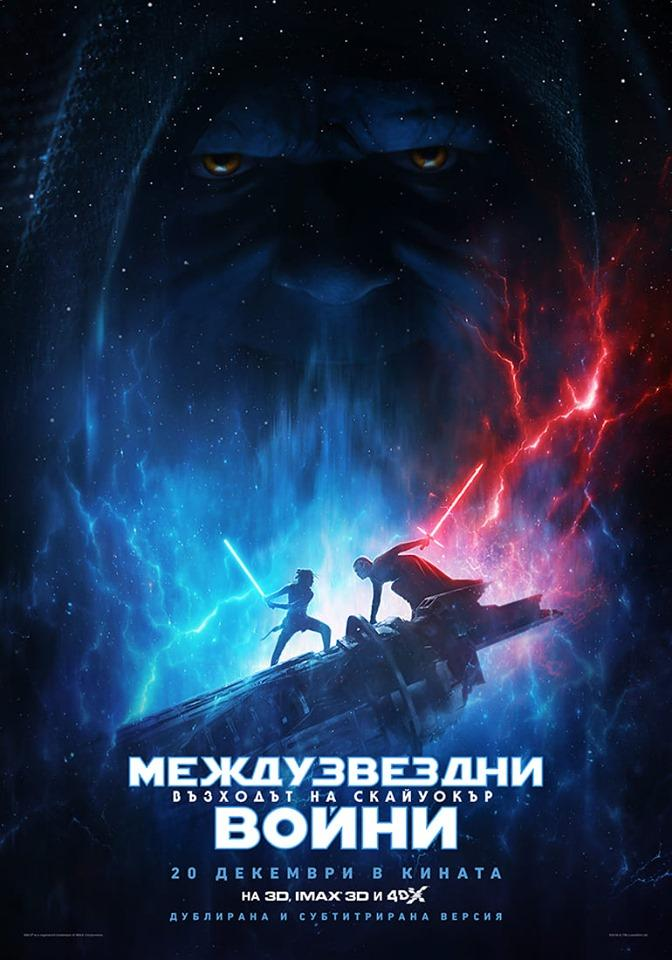

Междузвездни войни: Възходът на Скайуокър 3D (SUB) (2019)
Година след събитията в „Междузвездни войни: Последните джедаи“, Рей, Фин, По и последните остатъци от Съпротивата влизат в пореден сблъсък със силите на Първия ред и се изправят пред лицето на най-голямото зло. Епичната битка ще се води както в безкрайните простори на далечната галактика, така и дълбоко в душите на познатите ни герои. Всеки от тях трябва да надмогне своите вътрешни демони. А краят ще бъде белязан от възхода на Скайуокър. Оригинално заглавие: Star Wars IX: The Rise of Skywalker
Жанр: Екшън • Фентъзи • Приключенски
Премиера: 20.12.2019
БГ премиера: 20.12.2019
Страна: САЩ , английски